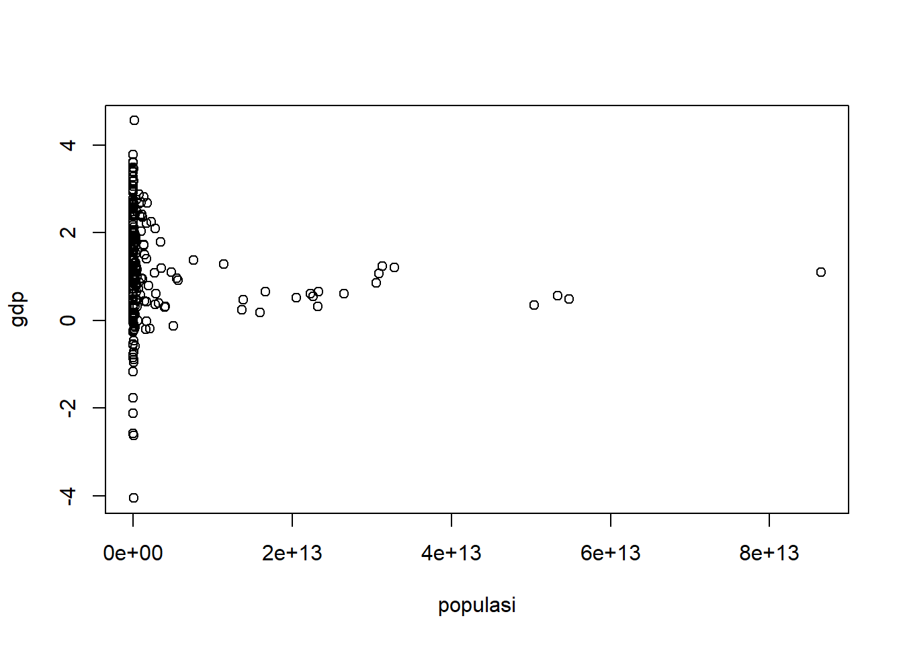

setwd('D:/METOPEL/LATIHAN')
library('readxl')
library('writexl')
library("stringi")Pengaruh Populasi Manusia dan Impor terhadap GDP pada tahun 2018
Metode Penelitian Politeknik APP Jakarta

1 Pendahuluan
1.1 Latar belakang
.png)
Luas bumi kurang lebih 510,1 juta km², dihuni oleh miliaran jiwa manusia yang dikelompokkan berdasarkan benua. Secara umum, benua di bumi terdiri dari benua Asia, Afrika, Eropa, Amerika Utara, Amerika Selatan dan Oceania. Benua-benua tersebut dibagi lagi menjadi beberapa kawasan. Jika di total, jumlah negara di keenam benua tersebut mencapai kurang lebih sekitar 233 negara.
UU Nomor 17 Tahun 2006 menerangkan bahwa impor adalah aktivitas memasukkan barang ke daerah pabean yang termasuk dalam wilayah Republik Indonesia. Impor tidak hanya upaya mendatangkan barang, tetapi juga jasa dan pihak yang melakukannya dikenal sebagai importir.
Gross Domestic Product (GDP) atau Produk Domestik Bruto (PDB) adalah salah satu konsep pendapatan nasional. GDP adalah jumlah produk berupa barang dan jasa, yang dihasilkan oleh unit-unit produksi di dalam batas wilayah suatu negara (domestik) selama satu tahun.
Maka dari itu, pembahasan kali ini membahas mengenai pengaruh populasi manusia dan angka impor terhadap GDP.
1.2 Ruang lingkup
Batasan masalah yang dapat saya ambil dalam penelitian ini adalah populasi manusia dan nilai impor seluruh dunia yaitu 233 negara serta berkaitan dengan Gross Domestic Product.
1.3 Rumusan masalah
1. Apa korelasi antara populasi manusia dengan GDP?
2. Apa korelasi antara impor dengan GDP?
3. Bagaimana pengaruh antara populasi manusia dengan impor terhadap GDP?
1.4 Tujuan dan manfaat penelitian
1. Mengetahui korelasi antara populasi manusia dengan GDP
2. Mengetahui korelasi antara impor dengan GDP
3. Mengetahui pengaruh antara populasi manusia dengan impor terhadap GDP
1.5 Package
Package yang digunakan:
2 Studi pustaka
3 2.1 Populasi Manusia
Menurut Nazir (2005), populasi adalah sekumpulan individu dengan kualitas dan karakter yang sudah ditetapkan oleh peneliti. Ciri, karakteristik, dan kualitas itu yang dinamakan sebagai variabel. Ia membagi populasi menjadi dua, yakni populasi finit dan infinit.
4 2.2 Impor
Menurut Susilo (2008: 101) impor bisa diartikan sebagai kegiatan memasukkan barang dari suatu negara (luar negeri) ke dalam wilayah pabean negara lain. Pengertian ini memiliki arti bahwa kegiatan impor berarti melibatkan dua negara.
5 2.3 GDP
Arsyad (1999) GDP merupakan jumlah nilai produksi barang-barang dan jasa-jasa akhir yang dihasilkan oleh setiap sektor produktif dalam suatu negara selama satu periode tertentu.
6 2.4 Kerangka Penelitian
Pada penelitian ini digunakan data panel yang bersumber dari World Trade Bank (WTB). Periode tahun yang digunakan adalah tahun 2018 dengan meneilit seluruh dunia yaitu 233 negara.
7 Metode penelitian
7.1 Data
Data yang digunakan adalah data yang menunjukan tingkat populasi manusia dan impor serta GDP seluruh dunia yang berasal dari World Trade Bank (WTB).
| NEGARA | populasi | impor | gdp |
|---|---|---|---|
| Aruba | 0,494795 | 74,63364 | 3,2E+09 |
| Africa Eastern and Southern | 2,688373 | 28,2575 | 1,01E+12 |
| Africa Western and Central | 2,669239 | 24,52026 | 7,66E+11 |
| Angola | 3,464457 | 25,54172 | 7,78E+10 |
| Albania | -0,24673 | 45,23619 | 1,52E+10 |
| Arab World | 2,096194 | 37,72515 | 2,8E+12 |
| United Arab Emirates | 0,78945 | 65,9258 | 4,27E+11 |
| Argentina | 1,015808 | 16,32585 | 5,25E+11 |
| Armenia | -0,54025 | 53,08021 | 1,25E+10 |
| American Samoa | -2,12294 | 103,5994 | 6,39E+08 |
| Antigua and Barbuda | 0,554873 | 70,5393 | 1,61E+09 |
| Australia | 1,502993 | 21,51614 | 1,43E+12 |
| Austria | 0,487072 | 52,46142 | 4,55E+11 |
| Azerbaijan | 0,866317 | 37,58028 | 4,71E+10 |
| Burundi | 2,983824 | 20,91405 | 2,66E+09 |
| Belgium | 0,455185 | 83,41516 | 5,43E+11 |
| Benin | 2,922392 | 34,52096 | 1,43E+10 |
| Burkina Faso | 2,768681 | 32,51672 | 1,59E+10 |
| Bangladesh | 1,161378 | 19,83984 | 3,21E+11 |
| Bulgaria | -0,72208 | 63,15581 | 6,64E+10 |
| Bahrain | 2,07237 | 71,55353 | 3,78E+10 |
| Bahamas, The | 0,720669 | 39,80621 | 1,28E+10 |
| Bosnia and Herzegovina | -1,16659 | 57,28754 | 2,02E+10 |
| Belarus | -0,21382 | 68,93869 | 6E+10 |
| Belize | 1,948634 | 48,63931 | 2,32E+09 |
| Bermuda | 0,070427 | 26,07611 | 7,23E+09 |
| Bolivia | 1,487474 | 31,12117 | 4,03E+10 |
| Brazil | 0,793768 | 14,2412 | 1,92E+12 |
| Barbados | 0,179289 | 39,93892 | 5,1E+09 |
| Brunei Darussalam | 0,924881 | 41,96404 | 1,36E+10 |
| Bhutan | 0,787112 | 53,36931 | 2,45E+09 |
| Botswana | 2,042785 | 43,22696 | 1,7E+10 |
| Central African Republic | 1,943059 | 33,72017 | 2,22E+09 |
| Canada | 1,412456 | 34,16753 | 1,73E+12 |
| Central Europe and the Baltics | -0,19625 | 61,19621 | 1,65E+12 |
| Switzerland | 0,736634 | 56,95032 | 7,26E+11 |
| Chile | 1,795963 | 29,64801 | 2,95E+11 |
| China | 0,467672 | 18,45368 | 1,39E+13 |
| Cote d’Ivoire | 2,566475 | 23,4268 | 5,8E+10 |
| Cameroon | 2,763738 | 21,85135 | 4E+10 |
| Congo, Dem. Rep. | 3,272827 | 37,3662 | 4,76E+10 |
| Congo, Rep. | 2,394185 | 49,00619 | 1,37E+10 |
| Colombia | 1,895587 | 20,63503 | 3,34E+11 |
| Comoros | 1,905028 | 30,08713 | 1,19E+09 |
| Cabo Verde | 1,09986 | 67,99842 | 1,97E+09 |
| Costa Rica | 0,934615 | 33,20683 | 6,24E+10 |
| Caribbean small states | -0,07202 | 12,56072 | 1E+11 |
| Curacao | 2,028638 | 45,52927 | 5,53E+09 |
| Cayman Islands | 0,849325 | 73,56066 | 2,56E+10 |
| Cyprus | 0,334427 | 71,00495 | 2,49E+11 |
| Czechia | 0,300527 | 41,21101 | 3,97E+12 |
| Germany | 1,617729 | 143,7788 | 2,91E+09 |
| Djibouti | 0,594793 | 77,76724 | 5,55E+08 |
| Dominica | 0,495839 | 50,41519 | 3,57E+11 |
| Denmark | 1,104838 | 28,50454 | 8,56E+10 |
| Dominican Republic | 1,903325 | 32,20434 | 1,75E+11 |
| Algeria | 0,653758 | 22,65018 | 1,66E+13 |
| East Asia & Pacific (excluding high income) | 1,284195 | 27,91022 | 1,14E+13 |
| Early-demographic dividend | 0,612448 | 27,60144 | 2,65E+13 |
| East Asia & Pacific | 0,402107 | 29,40957 | 3,18E+12 |
| Europe & Central Asia (excluding high income) | 0,319607 | 41,54149 | 2,32E+13 |
| Europe & Central Asia | 1,890909 | 23,75745 | 1,08E+11 |
| Ecuador | 1,898931 | 29,3663 | 2,5E+11 |
| Egypt, Arab Rep. | 0,240025 | 44,03105 | 1,37E+13 |
| Eritrea | 0,437983 | 32,42988 | 1,42E+12 |
| Spain | 0,348039 | 71,5964 | 3,06E+10 |
| Estonia | 2,673321 | 22,8267 | 8,43E+10 |
| Ethiopia | 0,17613 | 45,29327 | 1,6E+13 |
| European Union | 2,214657 | 27,31026 | 1,73E+12 |
| Fragile and conflict affected situations | 0,132641 | 39,72338 | 2,76E+11 |
| Finland | -0,0025 | 55,48662 | 5,58E+09 |
| Fiji | 0,358495 | 32,72429 | 2,79E+12 |
| France | 1,433043 | 54,05616 | 3,19E+09 |
| Faroe Islands | 0,450852 | 65,37673 | 4,02E+08 |
| Micronesia, Fed. Sts. | 2,391355 | 22,73752 | 1,69E+10 |
| Gabon | 0,605929 | 32,76489 | 2,88E+12 |
| United Kingdom | -0,03904 | 61,19701 | 1,76E+10 |
| Georgia | 2,12268 | 34,50362 | 6,73E+10 |
| Gibraltar | 2,533442 | 48,77702 | 1,19E+10 |
| Guinea | 2,641376 | 41,38268 | 1,67E+09 |
| Gambia, The | 2,372337 | 30,74202 | 1,5E+09 |
| Guinea-Bissau | 3,481607 | 44,03115 | 1,31E+10 |
| Equatorial Guinea | -0,20288 | 41,15712 | 2,12E+11 |
| Grenada | -0,26383 | 45,32211 | 3,06E+09 |
| Greenland | 1,600386 | 28,84236 | 7,33E+10 |
| Guatemala | 0,042694 | 53,78137 | 6,06E+09 |
| Guyana | 0,485417 | 31,00394 | 5,48E+13 |
| High income | 0,800231 | 188,5533 | 3,62E+11 |
| Hong Kong SAR, China | 1,709729 | 62,09635 | 2,41E+10 |
| Honduras | 2,88499 | 32,51621 | 7,71E+11 |
| Heavily indebted poor countries (HIPC) | -0,89349 | 50,27138 | 6,23E+10 |
| Croatia | 1,361131 | 36,44816 | 1,65E+10 |
| Haiti | -0,12679 | 79,5057 | 1,61E+11 |
| Hungary | 0,861612 | 24,90597 | 3,06E+13 |
| IBRD only | 1,21427 | 25,06841 | 3,29E+13 |
| IDA & IBRD total | 2,25093 | 27,24157 | 2,28E+12 |
| IDA total | 2,038494 | 21,18104 | 1,05E+12 |
| IDA blend | 0,966206 | 22,07156 | 1,04E+12 |
| Indonesia | 2,359028 | 32,35915 | 1,23E+12 |
| Isle of Man | 1,087528 | 23,68914 | 2,7E+12 |
| Not classified | 1,238875 | 94,29142 | 3,86E+11 |
| Ireland | 1,307882 | 28,16715 | 3,32E+11 |
| Iran, Islamic Rep. | 2,417561 | 24,99915 | 2,27E+11 |
| Iraq | 2,678143 | 43,3255 | 2,63E+10 |
| Iceland | 1,926623 | 29,02104 | 3,77E+11 |
| Israel | -0,19006 | 28,95 | 2,09E+12 |
| Italy | 0,123091 | 51,41406 | 1,57E+10 |
| Jamaica | 2,365103 | 52,8368 | 4,34E+10 |
| Jordan | -0,12688 | 18,30605 | 5,04E+12 |
| Japan | 1,314523 | 25,90274 | 1,79E+11 |
| Kazakhstan | 2,032734 | 21,87278 | 9,22E+10 |
| Kenya | 1,990322 | 67,27383 | 8,27E+09 |
| Kyrgyz Republic | 1,221446 | 63,30289 | 2,46E+10 |
| Cambodia | 1,565424 | 88,43665 | 1,96E+08 |
| St. Kitts and Nevis | 0,433519 | 37,27557 | 1,72E+12 |
| Korea, Rep. | 4,556082 | 45,61996 | 1,38E+11 |
| Kuwait | 1,096319 | 24,20265 | 4,84E+12 |
| Lao PDR | -2,62721 | 47,50279 | 5,49E+10 |
| Liberia | 1,548438 | 24,16763 | 7,67E+10 |
| St. Lucia | 0,920016 | 25,06348 | 5,7E+12 |
| Latin America & Caribbean | 2,422215 | 30,23799 | 1,09E+12 |
| Least developed countries: UN classification | 2,761659 | 34,15428 | 4,54E+11 |
| Liechtenstein | 1,048393 | 28,36315 | 9,45E+10 |
| Sri Lanka | 1,383906 | 29,09199 | 7,6E+12 |
| Lower middle income | 1,240126 | 24,34725 | 3,14E+13 |
| Low & middle income | 1,254413 | 93,92191 | 2,55E+09 |
| Lesotho | 0,54329 | 26,18171 | 2,26E+13 |
| Late-demographic dividend | -0,95419 | 73,38938 | 5,38E+10 |
| Lithuania | 1,928838 | 164,9226 | 7,1E+10 |
| Luxembourg | -0,77914 | 62,12342 | 3,44E+10 |
| Latvia | 1,920344 | 33,10075 | 5,53E+10 |
| St. Martin (French part) | 1,117897 | 43,42645 | 1,27E+11 |
| Monaco | -1,757 | 55,72752 | 1,15E+10 |
| Moldova | 2,554077 | 36,30548 | 1,38E+10 |
| Madagascar | 3,59964 | 83,71937 | 5,3E+09 |
| Maldives | 1,792135 | 36,49812 | 3,48E+12 |
| Middle East & North Africa | 0,951669 | 41,30183 | 1,22E+12 |
| Mexico | -2,57162 | 89,15526 | 2,19E+08 |
| Marshall Islands | 1,067733 | 24,19959 | 3,09E+13 |
| Middle income | 0,082636 | 72,84007 | 1,27E+10 |
| North Macedonia | 3,17485 | 35,62241 | 1,71E+10 |
| Mali | 3,491955 | 127,7754 | 1,53E+10 |
| Malta | 0,719693 | 34,08919 | 6,71E+10 |
| Myanmar | 1,728242 | 32,92083 | 1,39E+12 |
| Middle East & North Africa (excluding high income) | -0,02346 | 66,7343 | 5,51E+09 |
| Montenegro | 2,171356 | 68,19109 | 1,32E+10 |
| Mongolia | -0,84131 | 58,14132 | 1,3E+09 |
| Northern Mariana Islands | 2,946887 | 82,33415 | 1,48E+10 |
| Mozambique | 2,626188 | 52,56048 | 7,47E+09 |
| Mauritania | 0,054547 | 51,99091 | 1,47E+10 |
| Malawi | 1,315637 | 61,84761 | 3,59E+11 |
| Malaysia | 0,618129 | 16,71884 | 2,23E+13 |
| North America | 1,725165 | 45,8313 | 1,37E+10 |
| New Caledonia | 3,787596 | 26,29884 | 1,28E+10 |
| Niger | 2,496645 | 17,51094 | 4,22E+11 |
| Nigeria | 1,405105 | 51,70735 | 1,3E+10 |
| Nicaragua | 0,583933 | 74,13975 | 9,14E+11 |
| Netherlands | 0,660091 | 32,23794 | 4,37E+11 |
| Norway | 1,140549 | 40,63175 | 3,31E+10 |
| Nepal | 2,050398 | 90,625 | 1,24E+08 |
| Nauru | 1,79124 | 27,91625 | 2,12E+11 |
| New Zealand | 0,56321 | 28,50897 | 5,34E+13 |
| OECD members | 1,297249 | 38,65791 | 9,15E+10 |
| Oman | 1,791135 | 51,34604 | 4,43E+11 |
| Other small states | 1,537172 | 19,04426 | 3,56E+11 |
| Pakistan | 1,675123 | 47,19955 | 6,49E+10 |
| Panama | 1,875822 | 23,43929 | 2,23E+11 |
| Peru | 1,700248 | 41,94979 | 3,47E+11 |
| Papua New Guinea | -0,0002 | 50,70247 | 5,89E+11 |
| Poland | 2,812317 | 25,40458 | 1,35E+12 |
| Pre-demographic dividend | -4,04839 | 46,04722 | 1,01E+11 |
| Korea, Dem. People’s Rep. | -0,1601 | 42,98304 | 2,42E+11 |
| Portugal | 1,37397 | 35,58336 | 4,02E+10 |
| Paraguay | 2,533011 | 55,43971 | 1,63E+10 |
| West Bank and Gaza | 1,045099 | 56,35001 | 1,08E+10 |
| Pacific island small states | 0,353657 | 29,4776 | 5,04E+13 |
| French Polynesia | 2,007081 | 35,89659 | 1,83E+11 |
| Qatar | -0,58749 | 44,92892 | 2,43E+11 |
| Romania | -0,01307 | 20,78764 | 1,66E+12 |
| Russian Federation | 2,435038 | 34,6598 | 9,64E+09 |
| Rwanda | 1,191146 | 23,4931 | 3,53E+12 |
| South Asia | 2,38415 | 25,66677 | 8,17E+11 |
| Saudi Arabia | 3,191487 | 0,683885 | 3,23E+10 |
| Sudan | 2,714643 | 38,84042 | 2,31E+10 |
| Senegal | 0,469704 | 147,7283 | 3,77E+11 |
| Singapore | 2,397107 | 46,36844 | 1,62E+09 |
| Solomon Islands | 2,364713 | 39,22853 | 4,09E+09 |
| Sierra Leone | 0,154477 | 46,69924 | 2,6E+10 |
| El Salvador | 0,293204 | 142,8905 | 1,66E+09 |
| San Marino | 3,613059 | 87,46585 | 5,86E+09 |
| Somalia | -0,54635 | 59,0603 | 5,06E+10 |
| Serbia | 2,680774 | 26,56819 | 1,77E+12 |
| South Sudan | 2,680619 | 26,64334 | 1,77E+12 |
| Sub-Saharan Africa | 1,598797 | 52,34365 | 5,3E+11 |
| Suriname | 0,138508 | 93,96818 | 1,06E+11 |
| Slovak Republic | 0,362584 | 76,34973 | 5,42E+10 |
| Slovenia | 1,161645 | 43,44814 | 5,55E+11 |
| Sweden | 0,781899 | 44,32858 | 4,67E+09 |
| Eswatini | 0,788034 | 104,2413 | 1,19E+09 |
| Sint Maarten (Dutch part) | 0,954292 | 107,5873 | 1,64E+09 |
| Seychelles | 1,827394 | 35,74207 | 2,14E+10 |
| Turks and Caicos Islands | 3,378128 | 38,01407 | 1,12E+10 |
| Chad | 0,656021 | 22,63218 | 1,66E+13 |
| East Asia & Pacific (IDA & IBRD countries) | 0,314899 | 33,72844 | 4,08E+12 |
| Europe & Central Asia (IDA & IBRD countries) | 2,438994 | 32,74546 | 7,11E+09 |
| Togo | 0,323321 | 56,00377 | 5,07E+11 |
| Thailand | 2,244592 | 41,47063 | 7,77E+09 |
| Tajikistan | 1,606939 | 12,49588 | 4,08E+10 |
| Turkmenistan | 0,965476 | 24,71424 | 5,46E+12 |
| Latin America & the Caribbean (IDA & IBRD countries) | 1,485808 | 61,57505 | 1,56E+09 |
| Timor-Leste | 1,718609 | 32,65417 | 1,37E+12 |
| Middle East & North Africa (IDA & IBRD countries) | -0,2517 | 66,18274 | 4,89E+08 |
| Tonga | 1,191146 | 23,4931 | 3,53E+12 |
| South Asia (IDA & IBRD) | 2,680619 | 26,64334 | 1,77E+12 |
| Trinidad and Tobago | 1,02423 | 58,38608 | 4,27E+10 |
| Tunisia | 0,872634 | 31,40149 | 7,78E+11 |
| Tuvalu | 3,189237 | 17,90347 | 5,7E+10 |
| Tanzania | 3,401278 | 21,55135 | 3,29E+10 |
| Uganda | -0,46643 | 53,96458 | 1,31E+11 |
| Ukraine | 0,652116 | 22,60621 | 2,33E+13 |
| Upper middle income | 0,141388 | 21,42891 | 6,45E+10 |
| Uruguay | 0,526435 | 15,24939 | 2,05E+13 |
| United States | 1,736986 | 44,56425 | 5,26E+10 |
| British Virgin Islands | -0,26134 | 106,1448 | 3,92E+09 |
| Virgin Islands (U.S.) | 0,93284 | 80,24048 | 3,1E+11 |
| Vietnam | 2,403028 | 50,33442 | 9,15E+08 |
| Vanuatu | 1,103418 | 28,53914 | 8,65E+13 |
| World | 0,992506 | 46,96929 | 8,78E+08 |
| Samoa | 0,339011 | 57,26162 | 7,88E+09 |
| Kosovo | 2,48636 | 43,24692 | 2,16E+10 |
| Yemen, Rep. | 1,22553 | 27,06507 | 4,04E+11 |
| South Africa | 3,061888 | 36,93096 | 2,63E+10 |
| Zambia | 2,020537 | 28,3863 | 3,42E+10 |
Penelitian ini menggunakan data World Trade Bank (WTB).
library(readxl)
dat<-read_excel('METOPEL KAILA.xlsx')
head(dat)# A tibble: 6 × 4
Negara populasi impor gdp
<chr> <dbl> <dbl> <dbl>
1 Aruba 0.495 74.6 3.20e 9
2 Africa Eastern and Southern 2.69 28.3 1.01e12
3 Africa Western and Central 2.67 24.5 7.66e11
4 Angola 3.46 25.5 7.78e10
5 Albania -0.247 45.2 1.52e10
6 Arab World 2.10 37.7 2.80e127.2 Metode analisis
Metode yang dipilih adalah regresi univariat atau Ordinary Least Square (OLS) dengan 2 variabel independen. Penelitian ini bermaksud mencari hubungan antara populasi manusia, impor dan GDP. Spesifikasi yang dilakukan adalah:
\[ y_{t}=\beta_0 + \beta_1 x_t+ \beta_2 x_t + \mu_t \] yang dimana:
\(y_t\) adalah GDP
\(x_t\) adalah Populasi manusia dan Impor
8 Pembahasan
Pembahasan masalah
Pertumbuhan ekonomi suatu negara berpengaruh terhadap populasi penduduknya itu sendiri. Hal itu dikarenakan dengan bertambahnya populasi manusia maka akan meningkatkan produktivitas dari negara tersebut.
Lalu korelasi antara impor dengan GDP didapat dari devisa barang pengenaan bea masuk suatu barang ke negara yang mengimpor.
library(readxl)
dat<-read_excel(('METOPEL KAILA.xlsx'))
head(dat)# A tibble: 6 × 4
Negara populasi impor gdp
<chr> <dbl> <dbl> <dbl>
1 Aruba 0.495 74.6 3.20e 9
2 Africa Eastern and Southern 2.69 28.3 1.01e12
3 Africa Western and Central 2.67 24.5 7.66e11
4 Angola 3.46 25.5 7.78e10
5 Albania -0.247 45.2 1.52e10
6 Arab World 2.10 37.7 2.80e12Dikarenakan pada penelitian ini saya menggunakan metode OLS, maka saya hanya menghubungkan angka populasi manusia, angka impor dengan angka GDP indonesia pada periode tahun 2018.
8.1 Analisis masalah
Hasil regresinya adalah:
reg1<-lm(gdp~impor+populasi,data=dat)
summary(reg1)
Call:
lm(formula = gdp ~ impor + populasi, data = dat)
Residuals:
Min 1Q Median 3Q Max
-9.789e+12 -3.698e+12 -2.223e+12 -1.085e+12 8.172e+13
Coefficients:
Estimate Std. Error t value Pr(>|t|)
(Intercept) 8.656e+12 1.516e+12 5.708 3.5e-08 ***
impor -8.716e+10 2.391e+10 -3.645 0.00033 ***
populasi -1.296e+12 5.218e+11 -2.484 0.01370 *
---
Signif. codes: 0 '***' 0.001 '**' 0.01 '*' 0.05 '.' 0.1 ' ' 1
Residual standard error: 9.556e+12 on 230 degrees of freedom
Multiple R-squared: 0.06646, Adjusted R-squared: 0.05835
F-statistic: 8.188 on 2 and 230 DF, p-value: 0.0003673plot(dat$gdp,dat$populasi,xlab="populasi",ylab="gdp")
plot(dat$gdp,dat$populasi,xlab="impor",ylab="gdp")9 Kesimpulan
Kesimpulan dari penelitian ini adalah setiap meningkatnya 1 angka impor mengurangi 8,716E+10 GDP dan setiap meningkat populasi manusia 1 orang/1000 mengurangi 1,29612 dari GDP. Dan setiap meningkatnya 1 dolar impor mengurangi 8,7162E+10 dari GDP dari setiap meningkatnya 1000 populasi manusia mengurangi 1,296E+12 dari GDP.
10 Saran
Berdasarkan kesimpulan nyang telah didapat dari penelitian, setiap negara harus menjaga kestabilan GDP yang dihadapkan pada korelasi yang telah dilakukan penelitian yaitu populasi manusia dan angka impor.
11 Referensi
Mankiw, N. G. 2008. Makroekonomi edisi keenam. Jakarta. Penerbit: Erlangga.
Sukirno, S. 2010 Makro Ekonomi Teori Pengantar
edisi ketiga. Jakarta. Penerbit: Rajawali Pers.
Uktufia, M., & Septiani, Y. (Februari). PENGARUH EKSPOR, IMPOR, DAN GDP TERHADAP KURS DI INDONESIA TAHUN 1990 -2019. 2022, Volume V no.1. http://jurnal.magelangkota.go.id/index.php/cendelainovasi/article/view/117/57
World Trade Bank. GDP (current US$). 2018
World Trade Bank. Population growth (annual %). 2018
World Trade Bank. Import (annual %). 2018